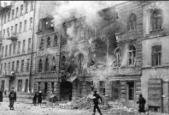

Résumé de la Bataille de Léningrad
La Bataille de Léningrad, également connue sous le nom de Siège de Léningrad, a été l'un des sièges les plus longs et les plus brutaux de l'histoire, durant du 8 septembre 1941 au 27 janvier 1944.
- Contexte : Après l'invasion de l'Union soviétique par l'Allemagne nazie en 1941, Léningrad (aujourd'hui Saint-Pétersbourg) est assiégée par les forces allemandes et finlandaises.
- Déroulement :
- Septembre 1941 : Début du siège avec des bombardements massifs et une tentative de blocus complet.
- 1941-1942 : Hiver terrible, entraînant une famine massive parmi la population civiles.
- 1942-1943 : Continuation des combats et des bombardements, avec des tentatives de percées soviétiques pour briser le siège.
- Janvier 1944 : Fin du siège avec la levée du blocus par les forces soviétiques.
- Issue : Victoire soviétique, mais à un coût élevé avec environ un million de civils et un million de soldats soviétiques morts.
- Importance : La résistance héroïque de Léningrad a été cruciale pour la défaite finale de l'Allemagne nazie en Europe de l'Est.
